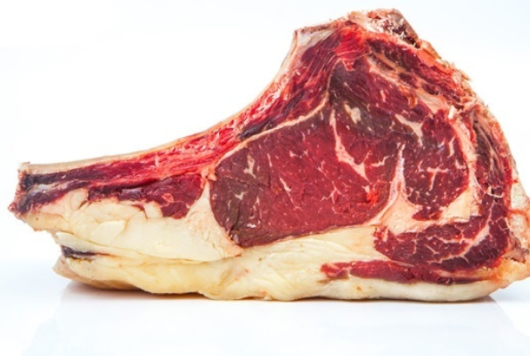
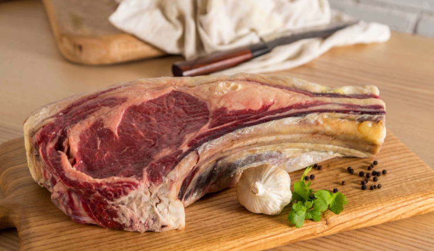
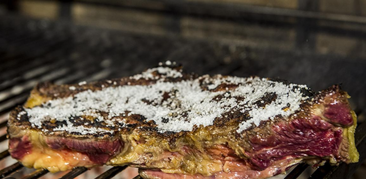
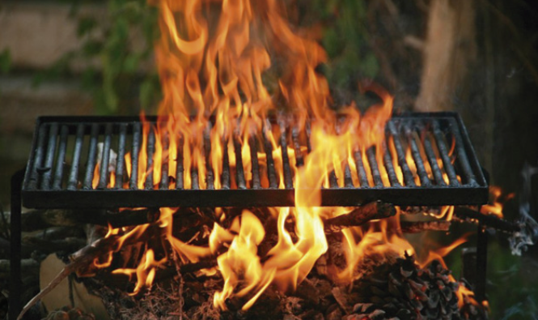
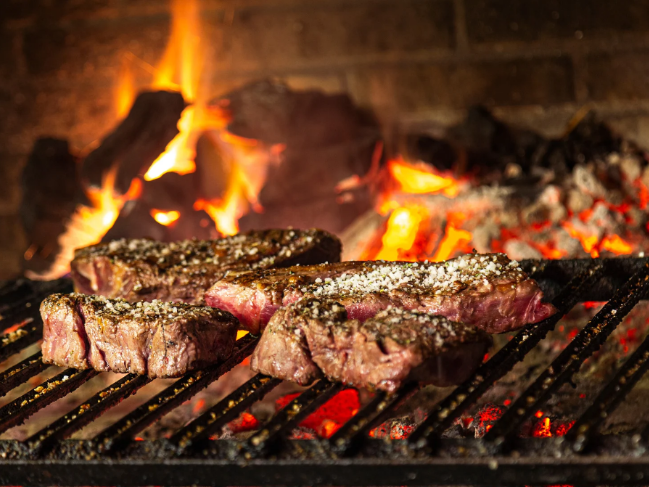
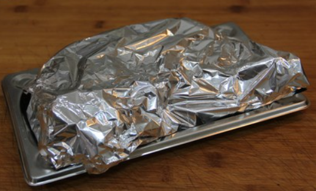
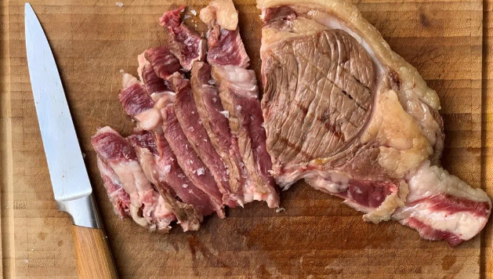
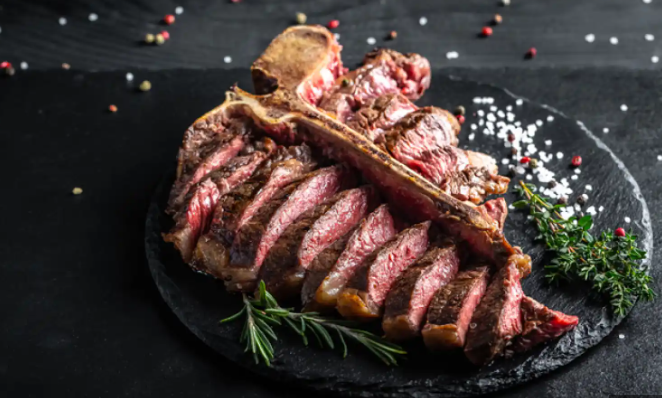

Chuletona la brasa
Volver al menú🔙
Preparacion del Chuleton 🥩
- Selección de la carne: Opta por un chuletón de ternera de primera calidad. Nuestro chuletón de ternera IGP Sierra de Guadarrama procede de animales criados en libertado en un marco incomparable donde pastan en libertad. También disponemos
de chuletón de vacuno mayor curados entre 40 y 60 días. En ambos encontrarás vetas de grasa entre las fibras musculares, que contribuyen a la jugosidad y el sabor del chuletón.

- Temperatura de la carne: Saca el chuletón del refrigerador y déjalo a temperatura ambiente durante unos 30-60 minutos antes de cocinarlo. Esto asegurará una cocción uniforme.

- Preparación previa: Frota el chuletón con sal gruesa y pimienta antes de cocinarlo. La sal ayudará a crear una costra sabrosa en la parrilla.

- Temperatura de la barbacoa: Espera a que se apaguen las llamas y el carbón se convierta en brasas calientes antes de colocar el chuletón en la parrilla.

- Colocación en la parrilla: Coloca el chuletón sobre la parrilla cerca de las brasas y deja que se selle durante unos minutos en cada lado para obtener un buen dorado y un sabor ahumado.

- Tiempo de cocción: El tiempo de cocción variará según el grosor del chuletón y tu preferencia. Utiliza el método de la prueba del dedo (tocar la carne para evaluar la firmeza) o un termómetro de cocina para determinar el nivel de cocción
deseado. No uses un tenedor, ya que esto liberaría los jugos. Estas son las temperaturas aproximadas: Poco hecho: 50-52°C (centro rojo y jugoso), al punto: 54-57°C (centro rosado y jugoso) y punto pasado: 57-60°C (centro más cocido pero aún
jugoso)
- Descanso: Una vez cocido según tu preferencia, retira el chuletón de la parrilla y déjalo reposar durante unos minutos, cubierto con papel de aluminio antes de cortar. Durante este tiempo, los jugos se redistribuirán por toda la carne.

- Corte: A la hora de servir es importante usar un cuchillo muy afilado (y que no sea de sierra) y cortar la carne en sentido contrario a sus fibras, es decir, de manera perpendicular a ellas. En el caso del chuletón esto se refiere a cortar
en vertical y no en horizontal.

